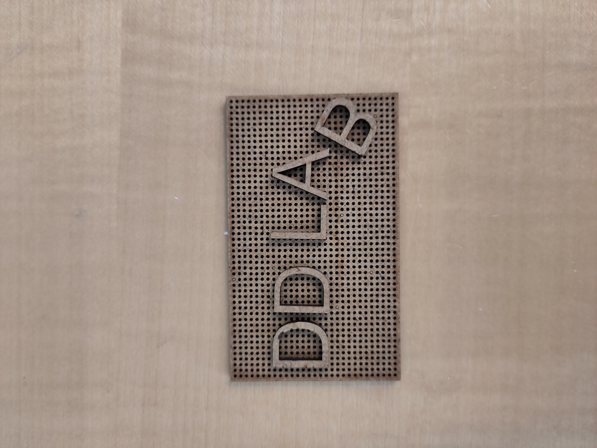

TLDR: Link til officiel guide her


Forme til at vakumforme
Man kan lave en form til at vakumforme på flere måder. Enten ved at støbe over et allerede eksisterende objekt, eller ved at lave en form selv. I DDlab har vi materialer til at lave forme af træ, ler og med 3D print.Når man laver en form er der flere parametre man skal overveje:
-
Draft Angle
Vinklen, siderne på formen har, afgør om man kan skille formen fra emnet, efter man har vakumformet over den. Huskeregler er at lodrette sider skal have en vinkel på 3-6 grader

- Underhæng
Underhæng er hvis toppen af formen er bredere end bunden. Med underhæng er det både svært/ umuligt at skille formen og det færdige emne fra hinanden og det er ikke muligt for plastikpladen at lægge sig helt ind til formen. Derfor er det noget man generelt skal undgå.

- Luftgennemstrøming
For at vakuumformen kan suge sig fast til formen, skal der være mulighed for at luften kan strømme ud fra mellem formen og plastikpladen. Derfor skal der være en åbning, eller huller i formen, hvor luften kan slippe ud


- Overfladefinish
Overfladen på formen kommer til at afspejle sig i det færdige emne. Dvs. at grove overflader fra træ eksempel kan ses på det støbte emne. Det samme gælder linjerne fra 3D print. En nem måde at efterbehandle på, er at slibe både træ og 3D print.
Link til grundig gennemgang af hvordan man 3D printer forme her
Eksempel projekt